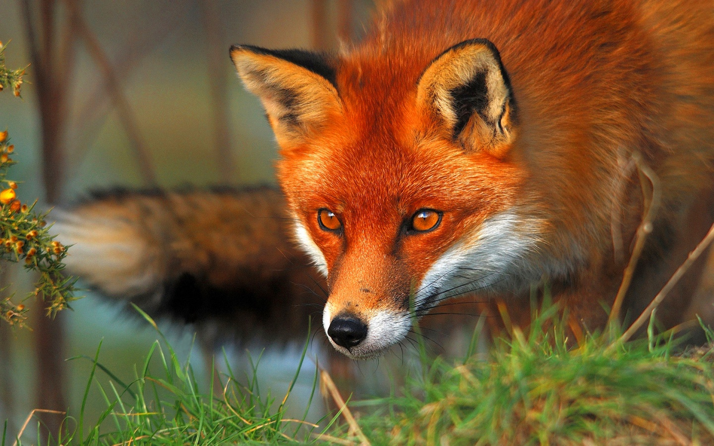

Медведь
Медве́жьи (лат. Ursidae) — семейство млекопитающих отряда хищных. Отличаются от других представителей псообразных более коренастым телосложением. Медведи всеядны, хорошо лазают и плавают, быстро бегают, могут стоять и проходить короткие расстояния на задних лапах. Имеют короткий хвост, длинную и густую шерсть, а также отличное обоняние. Охотятся вечером или на рассвете. Обычно остерегаются человека, но могут быть опасными в тех местах, где они привыкли к людям, особенно белый медведь и медведь гризли. Мало восприимчивы к пчелиным укусам из-за своей густой шерсти, чувствительны для медведей укусы пчёл в нос. В природе естественных врагов почти не имеют. Сравнительно с остальными семействами отряда хищных, медведи отличаются наибольшим разнообразием внешнего вида, размеров, многих особенностей внутреннего строения. Это самые крупные из современных наземных хищных зверей. Белые медведи достигают длины тела 3 м при массе до 725 и даже 890 кг; малайский медведь — самый мелкий представитель медвежьих: в длину он не превышает 1,5 м, высота в холке составляет всего 50—70 см; масса — 27—65 кг. Самцы на 10—20 % крупнее самок. У белых медведей разница самцов и самок в размерах и весе достигает 1,5—2 раза. Мех с развитым подшёрстком, довольно грубый. Волосяной покров высокий, иногда косматый; у большинства видов густой, у малайского медведя — низкий и редкий. Окраска однотонная, от угольно-чёрной до беловатой. У большой панды контрастная, чёрно-белая. На груди или вокруг глаз бывают светлые отметины. У некоторых видов имеет место индивидуальная и географическая изменчивость окраски. Окраска по сезонам не меняется. Сезонный диморфизм выражается в изменении высоты и густоты меха.
Лисица
общее название нескольких видов млекопитающих семейства псовых. Лишь 10 видов этой группы относят к роду собственно лисиц (лат. Vulpes). Наиболее известный и распространённый представитель — обыкновенная лисица (Vulpes vulpes). Лисицы встречаются в фольклоре многих народов по всему миру. Раскрас лис может меняться от белоснежно мраморного до жемчужно чёрного.[источник не указан 51 день] Некоторые виды лис могут содержаться в неволе как экзотические домашние животные.[ Согласно современным представлениям о филогисточник не указан 56 дней]ении псовых, группа лисиц в понимании, которое используется в этой статье, — полифилетическая, следовательно, непригодная для использования в качестве таксона.
Волк
Волк, или серый волк, или обыкнове́нный волк (лат. Canis lupus) — вид хищных млекопитающих из семейства псовых (Canidae). Наряду с койотом (Canis latrans), обыкновенным шакалом (Canis aureus) и ещё несколькими видами составляет род волков (Canis). Кроме того, как показывают результаты изучения последовательности ДНК и дрейфа генов, является прямым предком домашней собаки, которая обычно рассматривается как подвид волка (Canis lupus familiaris). Волк — одно из самых крупных современных животных в своём семействе: длина его тела (без учёта хвоста) может достигать 160 см, длина хвоста — до 52 см, высота в холке — до 90 см; масса тела может доходить до 80 кг. Когда-то волк имел гораздо большее распространение в Евразии и Северной Америке. В настоящее время его ареал и общая численность животных заметно уменьшились, главным образом в результате человеческой деятельности: изменения природных ландшафтов, урбанизации и массового истребления. Во многих регионах мира волк находится на грани полного исчезновения, хотя на севере Евразии и Америки его популяция всё ещё остаётся стабильной. Несмотря на то, что популяция волков продолжает уменьшаться, он до сих пор во многих местах является объектом охоты как представляющий потенциальную опасность для человека и домашнего скота либо ради развлечения.
Наш Заповедник
Аска́ния-Но́ва (укр. Асканія-Нова) — биосферный заповедник «Аскания-Нова» имени Ф. Э. Фальц-Фейна НААНУ, расположенный в Херсонской области Украины, вблизи одноимённого посёлка городского типа, в 60 км к юго-востоку от Каховки. Аскания-Нова (дословно «Новая Аскания») была основана в 1828 году герцогом Фердинандом Фридрихом Ангальт-Кётенским, представителем немецкой династии Асканиевых в качестве овцеводческой колонии герцогства Ангальт-Кётен